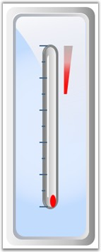
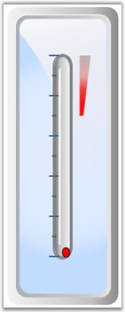
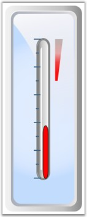
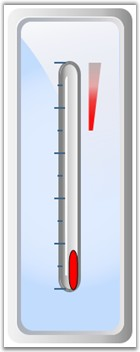
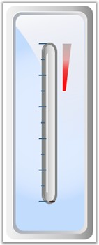
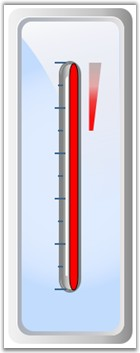

Gauge Silverlight now comes with keyboard navigation support. The keys can be used to change the pointer value in the Linear Gauge.
Default Keys
By default, the following keys on the keyboard can be used to change the pointer value:
· UP ARROW and PAGE UP keys can be used to increase the pointer value of a gauge.
· DOWN ARROW and PAGE DOWN keys can be used to decrease the value.
· RIGHT ARROW and LEFT ARROW keys increase and decrease the pointer value.
· HOME and END keys are used to set the value to Minimum and Maximum.
· TAB key selects the pointer to navigate.
 Note:
Note:
By default, when the pointer gets focus, its border color changes to black. This can be modified by using PointerSelectionBrush property.
Custom keys can be added to increase and decrease the pointer value by using the IncrementKey and DecrementKey properties.
The following screen shots illustrate the effect of default keys on gauge pointers:
1. Initial Linear Gauge

Figure 102: Linear Gauge
2. Focus is shifted to Linear Gauge Pointer.

Figure 103: Linear Gauge Pointer Focused
3. Focus is removed from the Linear Gauge Pointer.
Figure 104: Linear Gauge Pointer Focus Lost
4. Linear Gauge Pointer value is increased.

Figure 105: Increase in Linear Gauge Pointer Value
5. Linear Gauge Pointer value is decreased.

Figure 106: Decrease in Linear Gauge Pointer Value
6. HOME key is pressed.

Figure 107: Linear Gauge Pointer returns to the Start
7. END key is pressed.

Figure 108: Linear Gauge Pointer returns to the End
 Customization of Navigation
Customization of Navigation